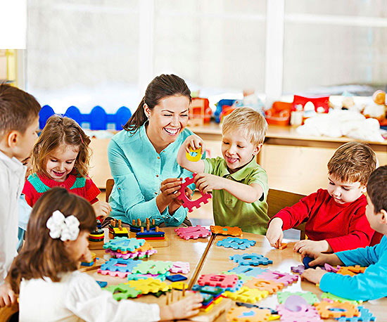

what's new
-
With the school term coming to a close and lockdown still going on, exams must be taken in a new way...

Online examinations are becoming extremely popular these days with many universities, institutes and competitive examinations body switching from the Pen and Paper based test. Online examination is basically the exam conducted on a computer with no physical question paper. Online exams are tests with Multiple Choice Questions (MCQs) where candidates have to select the right answer among the four available options and mark on the virtual answer sheet. Online exams, also known as Computer Based Test (CBT) are very beneficial to the organizers as it has zero risk on security or cheating front, is a safe and reliable mode of exam, reduces the time to check answers and prepare the result. The exam centers for computer based tests are set up in colleges or computer labs with adequate facility and arrangements required for conducting the online examination.
-
Children brought together
With the internet getting quicker and qiucker and the world slowly changing, children are getting more and more distant. Which is why it is importent to stop and spend some time with the people you love every now and then. The school's new general bonding sessions are a time for learners and adults alike to spend time together and get to know each other. We have games and activities that makes you learn more about yourself and others.